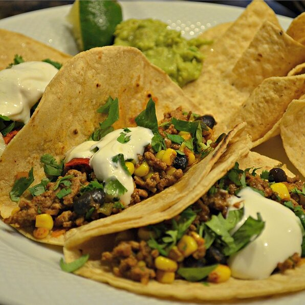

Beef Tacos

Description
Ground beef tacos with beans and veggies are seasoned just right, served in tortillas or tacos--and they're ready in
under half an hour.
This is what I prep on super busy weeknights – and I even prep it ahead of time too. In 15 minutes this seasoned beef
will be done and you’ll want to eat a taco or nacho every single night.
Ingredients
- 1 pound ground beef
- 1 (12 ounce) bag Birds Eye® Recipe Ready Southwest Blend
- 1 (11.04 ounce) box taco dinner kit
- ¼ cup water
- Sour cream
- Shredded lettuce
Steps
- Brown ground beef in large nonstick skillet; drain fat.
- Add Recipe Ready Southwest Blend, taco seasoning and water. Cook over medium-high heat, stirring occasionally, 5 minutes
or until vegetables are tender.
- Serve in tortillas and taco shells topped with taco sauce, shredded lettuce and sour cream.